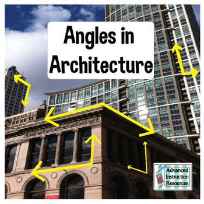
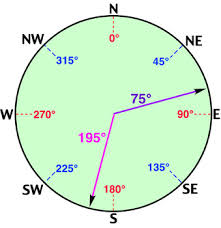
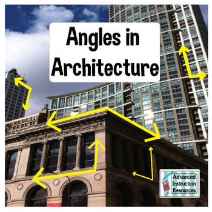
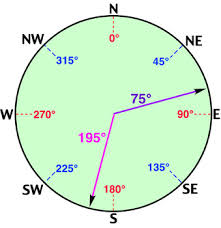

Introduction to Angles
Angles are fundamental geometric elements that are all around us in our daily lives. Understanding angles is not only crucial in mathematics but also in various real-life situations, from architecture to navigation. In this section, we'll explore the basics of angles and why they matter.
What Are Angles?
An angle is the figure formed by two rays, or line segments, that share a common endpoint called the vertex. Angles are measured in degrees, and they can vary in size from 0 degrees (a perfectly straight line) to 360 degrees (a full circle).
Real-Life Examples
Angles are all around us, and you might not even realize it. Here are some real-life situations where angles play a crucial role:
Door Hinges:
When a door opens or closes, the angle formed between the door and the wall is an example of an angle in action. The ability to open and close doors depends on the angles of the hinges and the relative position of the door and the frame.

Clock Hands:
The hands of a clock create angles as they move, allowing us to tell time. The minute and hour hands form varying angles throughout the day
, helping us track the time's progression.

Road Signs:
Traffic signs often use angles to convey information, such as the angle at which a curve in the road should be approached. Understanding these angles is crucial for safe and efficient driving on roads and highways.
 Architecture:
Architects use angles in building designs, ensuring structural integrity and aesthetics. The angles between load-bearing beams, the pitch of a roof, and the placement of windows all influence the final look and functionality of a building.

Navigation and Cartography:
In navigation, understanding angles is vital for determining your position and direction. Nautical and aviation charts rely on angles for accurate travel and location information.

Architecture:
Architects use angles in building designs, ensuring structural integrity and aesthetics. The angles between load-bearing beams, the pitch of a roof, and the placement of windows all influence the final look and functionality of a building.

Navigation and Cartography:
In navigation, understanding angles is vital for determining your position and direction. Nautical and aviation charts rely on angles for accurate travel and location information.
